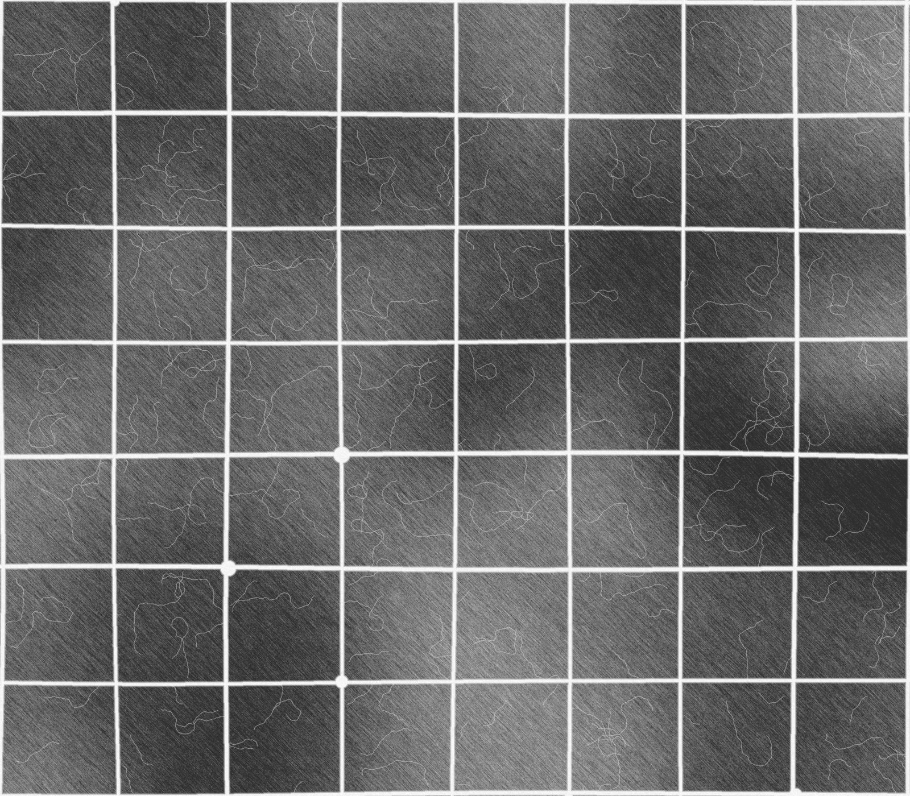
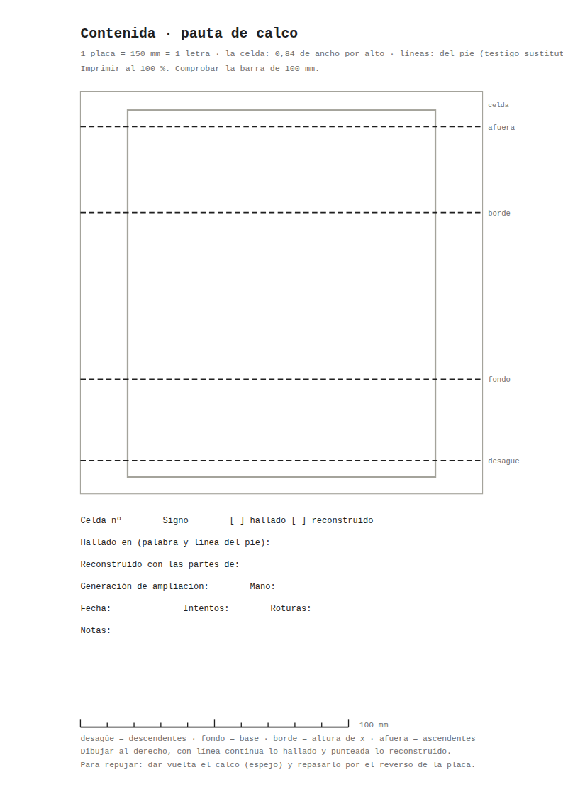

la celda es la pauta
Una letra, una celda: la de la cabeza del ídolo, 0,84 de ancho por alto.
Primero la pauta fue la piscina: una letra por azulejo, la tesela como unidad. Pero la piscina fue escenario y pantalla, no molde. Ahora la letra vive en la celda de la cabeza del ídolo, un rectángulo dentro de otro, con la proporción que se mide en la lámina.
Las cuatro líneas las da el pie. Sus nombres son de vasija: afuera, borde, fondo y desagüe.
La piscina queda al final. Su pared recibe la letra y sus juntas la cortan. El frotado de la pared es el papel sobre el que se calca.
- celda
- 0,84 de ancho por alto
- placa
- 150 × 150 mm, hasta medir la pared
- canal
- 9,0 mm, sin contraste
- desagüe
- 3 mm, el surco del punzón
- afuera
- 94,1 mm sobre el fondo
- borde
- 62,1 mm sobre el fondo
- desagüe
- 30,2 mm bajo el fondo


